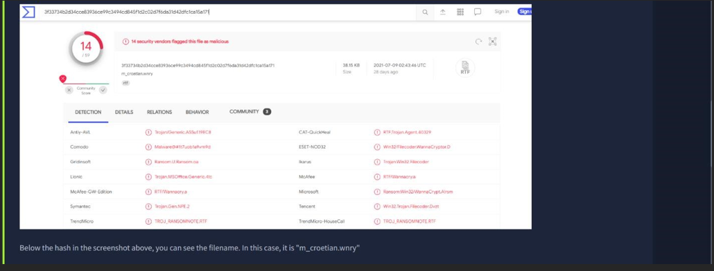
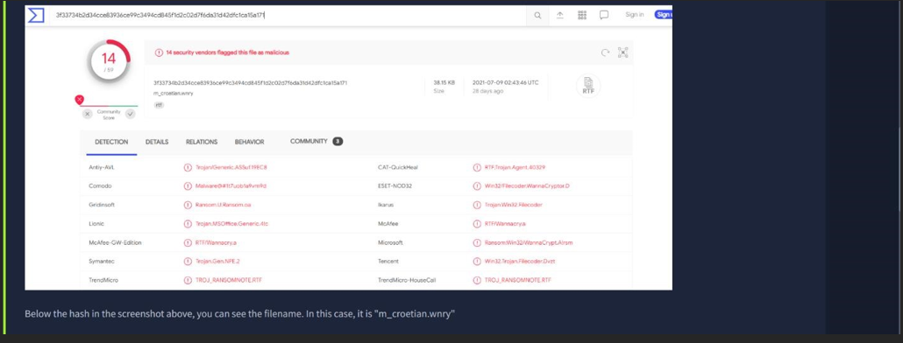

Task 1: Introduction
Introductory statement to the concept of Pyramid of Pain.

Task 2: Hash Values (Trivial)
-In this task we are changing the hash value of a file by simply appending a string to the end of a file the ‘echo’: File Hash (Before Modification)
 



Conclusion:
-After analysis of a report associated with the hash "b8ef959a9176aef07fdca8705254a163b50b49a17217a4ff 0107487f59d4a35d" we retrieve the filename of the sample.
Task 3: IP Address (Easy)
-I am required to do some detective work by analyzing a report to discover the first IP Address and the first domain name the malicious process (PID 1632) attempts to communicate with.

-The image in the screenshot above is where I retrieved my answer on the report.

Conclusion:
-Post discovery I add my findings of the first IP Address and domain name to my report for the subsequent task.
Task 4: Domain Names (Simple)
-Using a report attached as a link, I use it to discover the first suspicious domain request and answer subsequent questions.

-Below are replicas of HTTP requests, Connections and DNS requests I went through on the report.

Conclusion:
-I added the first suspicious domain request, the type of attack that uses Unicode characters in the domain name and the redirected website to my findings.
Task 5: Host Artifacts (Annoying)
-Host artifacts are the traces/observables that attackers leave on the system, such as registry values, suspicious process execution, IOCs or anything exclusive to the current threat.

- I reviewed a malicious sample analyzed by a security vendor.
Conclusion:
-All possible traces of the attacker have been discovered and recorded.
Task 6: Network Artifacts (Annoying)
-A network artifact can be a user-agent string, C2 information or URI patterns followed by the HTTP POST requests. An attacker might use a user-agent string that hasn’t observed in your environment before or seems out of the ordinary.
-Network artifacts can be detected in Wireshark PCAPs by using a network protocol analyzer such as TShark or exploring IDS logging from a source such as Snort.

Conclusion:
-If you detect the custom user-agent strings that the attacker is using, you might be able to block them, creating more obstacles and make their attempt to compromise the network more annoying.
Task 7: Tools (Challenging)
-After levelling up our detection capabilities against the artifacts, an attacker would either give up or go back and try to create a new tool that serves the same purpose.
-Attackers would use the utilities to create malicious macro documents (maldocs) for spearphishing attempts, a backdoor that can be used for C2, etc.

Conclusion:
-SSDeep is a type of fuzzy hashing algorithm that helps identify similar files, even if they’ve been modified. This is useful in tasks like malware analysis, where identifying modified versions of known malicious files is important.
Task 8: TTPs (Tough)
-TTPs stands for Tactics, Techniques and Procedures. This includes the whole MITRE ATT&CK Matrix, which means all the steps taken by an adversary to achieve his goal starting from phishing attempts to persistence and data exfiltration.
Conclusion:
-If you can detect and respond to TTPs quickly, you leave the adversaries almost no chance to fight back.
Task 9: Practical: The Pyramid of Pain
-Interaction with an attached static site that I deployed to retrieve a flag.